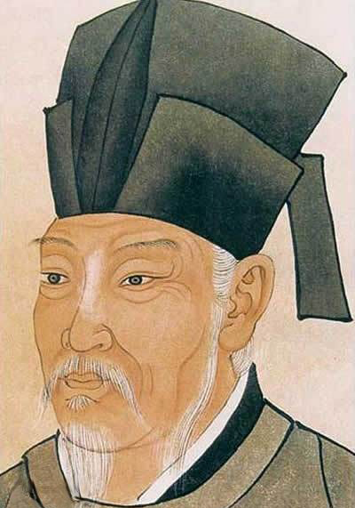
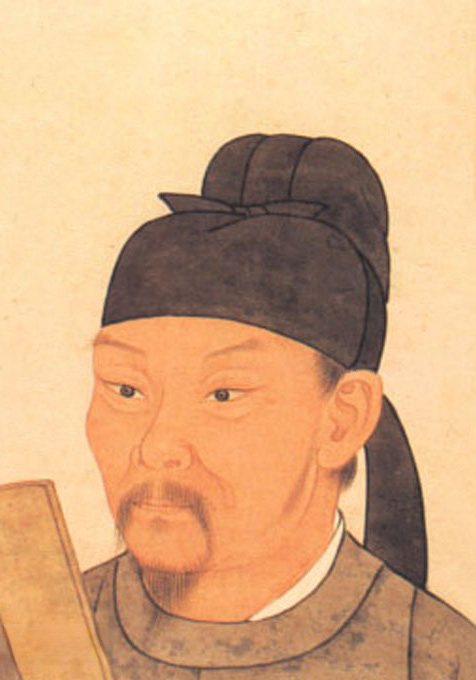
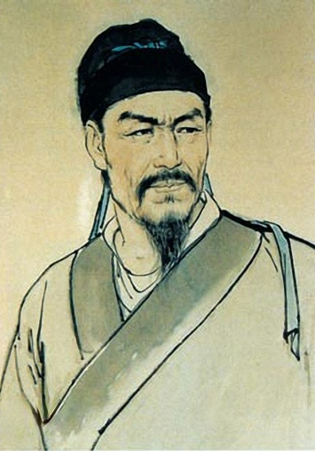

|
不限 |
缩略/列表 |
|
朝代： 不限 先秦 两汉 魏晋 南北朝 隋代 唐代 五代 宋代 金朝 元代 明代 清代 |
|

李白 李白（701年－762年） ，字太白，号青莲居士，又号“谪仙人”，唐代伟大的浪漫主义诗人，被后人誉为“诗仙”，与杜甫并称为“李杜”，为了与另两位诗人李商隐与杜牧即“小李杜”区别，杜甫与李白又合称“大李杜”。据《新唐书》记载，李白为兴圣皇帝（凉武昭王李暠）九世孙，与李唐诸王同宗。其人爽朗大方，爱饮酒作诗，喜交友。李白深受黄老列庄思想影响，有《李太白集》传世，诗作中多以醉时写的，代表作有《望庐山瀑布》《行路难》《蜀道难》《将进酒》《明堂赋》《早发白帝城》等多首。 ▶1184篇诗文 ▶5528条名句 |
|
|

苏轼 苏轼（1037年1月8日-1101年8月24日）字子瞻、和仲，号铁冠道人、东坡居士，世称苏东坡、苏仙，汉族，眉州眉山（四川省眉山市）人，祖籍河北栾城，北宋著名文学家、书法家、画家，历史治水名人。苏轼是北宋中期文坛领袖，在诗、词、散文、书、画等方面取得很高成就。文纵横恣肆；诗题材广阔，清新豪健，善用夸张比喻，独具风格，与黄庭坚并称“苏黄”；词开豪放一派，与辛弃疾同是豪放派代表，并称“苏辛”；散文著述宏富，豪放自如，与欧阳修并称“欧苏”，为“唐宋八大家”之一。苏轼善书，“宋四家”之一；擅长文人画，尤擅墨竹、怪石、枯木等。与韩愈、柳宗元和欧阳修合称“千古文章四大家”。作品有《东坡七集》《东坡易传》《东坡乐府》《潇湘竹石图卷》《古木怪石图卷》等。 ▶3368篇诗文 ▶ 3449条名句 |
|
|
|

白居易 白居易（772年－846年），字乐天，号香山居士，又号醉吟先生，祖籍太原，到其曾祖父时迁居下邽，生于河南新郑。是唐代伟大的现实主义诗人，唐代三大诗人之一。白居易与元稹共同倡导新乐府运动，世称“元白”，与刘禹锡并称“刘白”。白居易的诗歌题材广泛，形式多样，语言平易通俗，有“诗魔”和“诗王”之称。官至翰林学士、左赞善大夫。公元846年，白居易在洛阳逝世，葬于香山。有《白氏长庆集》传世，代表诗作有《长恨歌》、《卖炭翁》、《琵琶行》等。 ▶3084篇诗文 ▶ 1366条名句 |
|
|
|

杜甫 杜甫（712－770），字子美，自号少陵野老，世称“杜工部”、“杜少陵”等，汉族，河南府巩县（今河南省巩义市）人，唐代伟大的现实主义诗人，杜甫被世人尊为“诗圣”，其诗被称为“诗史”。杜甫与李白合称“李杜”，为了跟另外两位诗人李商隐与杜牧即“小李杜”区别开来，杜甫与李白又合称“大李杜”。他忧国忧民，人格高尚，他的约1400余首诗被保留了下来，诗艺精湛，在中国古典诗歌中备受推崇，影响深远。759-766年间曾居成都，后世有杜甫草堂纪念。 ▶13381篇诗文 ▶2192条名句 |
|
|
|
李清照 李清照（1084年3月13日～1155年5月12日）号易安居士，汉族，山东省济南章丘人。宋代（南北宋之交）词人，婉约词派代表，有“千古第一才女”之称。所作词，前期多写其悠闲生活，后期多悲叹身世，情调感伤。形式上善用白描手法，自辟途径，语言清丽。论词强调协律，崇尚典雅，提出词“别是一家”之说，反对以作诗文之法作词。能诗，留存不多，部分篇章感时咏史，情辞慷慨，与其词风不同。有《易安居士文集》《易安词》，已散佚。后人有《漱玉词》辑本。今有《李清照集校注》。 ▶101篇诗文 ▶613条名句 |
|
|
|

辛弃疾 辛弃疾（1140－1207），南宋词人。原字坦夫，改字幼安，别号稼轩，汉族，历城（今山东济南）人。出生时，中原已为金兵所占。21岁参加抗金义军，不久归南宋。历任湖北、江西、湖南、福建、浙东安抚使等职。一生力主抗金。曾上《美芹十论》与《九议》，条陈战守之策。其词抒写力图恢复国家统一的爱国热情，倾诉壮志难酬的悲愤，对当时执政者的屈辱求和颇多谴责；也有不少吟咏祖国河山的作品。题材广阔又善化用前人典故入词，风格沉雄豪迈又不乏细腻柔媚之处。由于辛弃疾的抗金主张与当政的主和派政见不合，后被弹劾落职，退隐江西带湖。 ▶903篇诗文 ▶1379条名句 |
|
|
| 下一页 | 1 | /4页 | 上一页 |
 |
关注公众号
将古诗文随身携带 |
作者 |
||
| 李白 | 白居易 | 杜甫 |
| 苏轼 | 辛弃疾 | 李清照 |
| 刘禹锡 | 王维 | 李商隐 |
| 纳兰性德 | 杜牧 | 陆游 |
| 陶渊明 | 孟浩然 | 元稹 |
| 李煜 | 柳宗元 | 岑参 |
| 韩愈 | 王安石 | 欧阳修 |
| 齐己 | 贾岛 | 韦应物 |
| 曹操 | 温庭筠 | 柳永 |
| 刘长卿 | 李贺 | 曹植 |
| 王昌龄 | 张籍 | 孟郊 |
| 皎然 | 贯休 | 许浑 |
| 罗隐 | 杨万里 | 陆龟蒙 |
| 张祜 | 王建 | 韦庄 |
| 诸葛亮 | 范仲淹 | 王勃 |
| 姚合 | 晏殊 | 屈原 |
| 卢纶 | 杜荀鹤 | 岳飞 |
| 周邦彦 | 晏几道 | 钱起 |
| 韩偓 | 皮日休 | 秦观 |
| 吴文英 | 朱熹 | 高适 |
| 方干 | 马致远 | 李峤 |
| 赵嘏 | 权德舆 | 皇甫冉 |
| 左丘明 | 刘辰翁 | 王之涣 |
| 郑谷 | 黄庭坚 | 贺铸 |
| 赵长卿 | 张九龄 | 卓文君 |
| 戴叔伦 | 司马迁 | 周敦颐 |
| 文天祥 | 张说 | 张炎 |
| 郑燮 | 程垓 | 朱敦儒 |
| 吴融 | 白朴 | 刘克庄 |
| 李端 | 司空图 | 顾况 |
| 张乔 | 马戴 | 吴潜 |
| 张孝祥 | 韩翃 | 郦道元 |
| 陈著 | 宋之问 | 贺知章 |
|
扫码下载客户端
古文岛客户端 |
 | 备渝公网安备50010602501990号
| 备渝公网安备50010602501990号